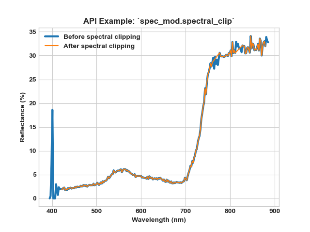
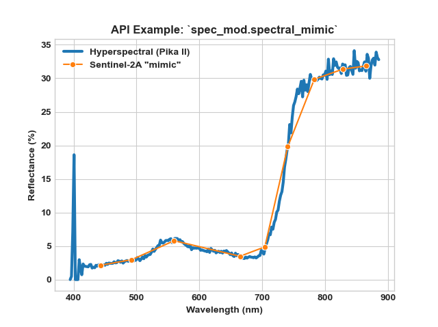
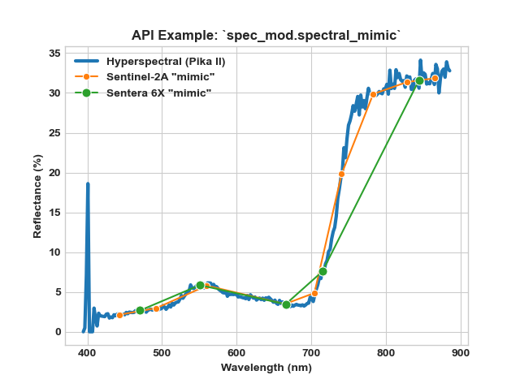
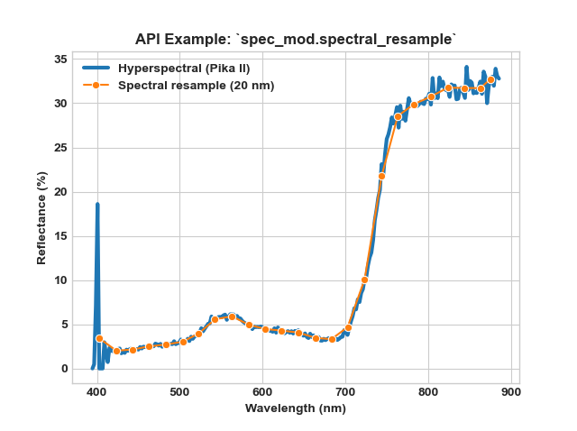
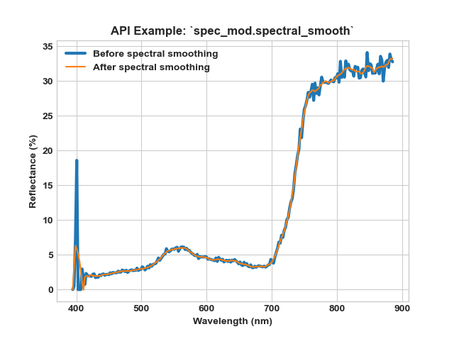

8.1.7. spec_mod¶
-
class
hs_process.spec_mod(spyfile)[source]¶ Bases:
objectClass for manipulating data within the spectral domain, which is usually pixel-based.
Methods Summary
load_spyfile(spyfile)Loads a
SpyFile(Spectral Python object) for data access and/or manipulation by thehstoolsclass.spec_derivative([spyfile_spec, order])Calculates the numeric derivative spectra from spyfile_spec.
spectral_clip([wl_bands, spyfile])Removes/clips designated wavelength bands from the hyperspectral datacube.
spectral_mimic([sensor, df_band_response, ...])Mimics the response of a multispectral sensor based on transmissivity
spectral_resample([bandwidth, bins_n, spyfile])Performs pixel-wise resampling of spectral bands via binning
spectral_smooth([window_size, order, spyfile])Performs Savitzky-Golay smoothing on the spectral domain.
Methods Documentation
-
load_spyfile(spyfile)[source]¶ Loads a
SpyFile(Spectral Python object) for data access and/or manipulation by thehstoolsclass.- Parameters
spyfile (
SpyFileobject) -- The datacube being accessed and/or manipulated.
Example
Load and initialize the
hsioandspec_modmodules>>> from hs_process import hsio >>> from hs_process import spec_mod >>> fname_in = r'F:\nigo0024\Documents\hs_process_demo\Wells_rep2_20180628_16h56m_pika_gige_7-Convert Radiance Cube to Reflectance from Measured Reference Spectrum.bip.hdr' >>> io = hsio(fname_in) >>> my_spec_mod = spec_mod(io.spyfile)
Load datacube
>>> my_spec_mod.load_spyfile(io.spyfile) >>> my_spec_mod.spyfile Data Source: 'F:\nigo0024\Documents\hs_process_demo\Wells_rep2_20180628_16h56m_pika_gige_7-Convert Radiance Cube to Reflectance from Measured Reference Spectrum.bip' # Rows: 617 # Samples: 1300 # Bands: 240 Interleave: BIP Quantization: 32 bits Data format: float32
-
spec_derivative(spyfile_spec=None, order=1)[source]¶ Calculates the numeric derivative spectra from spyfile_spec.
The derivavative spectra is calculated as the slope (rise over run) of the input spectra, and is normalized by the wavelength unit.
- Parameters
spyfile_spec -- The spectral spyfile object to calculate the derivative for.
order (
int) -- The order of the derivative (default: 1).
Example
Load and initialize
hsio>>> import os >>> from hs_process import hsio >>> from hs_process import spec_mod >>> data_dir = r'F:\nigo0024\Documents\hs_process_demo' >>> fname_hdr_spec = os.path.join(data_dir, 'Wells_rep2_20180628_16h56m_pika_gige_7_plot_611-cube-to-spec-mean.spec.hdr') >>> io = hsio() >>> io.read_spec(fname_hdr_spec) >>> my_spec_mod = spec_mod(io.spyfile_spec)
Calculate the numeric derivative.
>>> spec_dydx, metadata_dydx = my_spec_mod.spec_derivative(order=1)
>>> io.write_spec('spec_derivative_order-1.spec.hdr', spec_dydx, df_std=None, metadata=metadata_dydx)
Plot the numeric derivative spectra and compare against the original spectra.
>>> import numpy as np >>> import seaborn as sns >>> sns.set_style("ticks") >>> wl_x = np.array([float(i) for i in metadata_dydx['wavelength']]) >>> y_ref = io.spyfile_spec.open_memmap()[0,0,:]*100 >>> ax1 = sns.lineplot(wl_x, y_ref) >>> ax2 = ax1.twinx() >>> ax2 = sns.lineplot(wl_x, 0, ax=ax2, color='gray') >>> ax2 = sns.lineplot(wl_x, spec_dydx[0,0,:]*100, ax=ax2, color=sns.color_palette()[1]) >>> ax2.set(ylim=(-0.8, 1.5)) >>> ax1.set_xlabel('Wavelength (nm)', weight='bold') >>> ax1.set_ylabel('Reflectance (%)', weight='bold') >>> ax2.set_ylabel('Reflectance derivative (%)', weight='bold') >>> ax1.set_title(r'API Example: `hstools.spec_derivative`', weight='bold')
-
spectral_clip(wl_bands=[[0, 420], [760, 776], [813, 827], [880, 1000]], spyfile=None)[source]¶ Removes/clips designated wavelength bands from the hyperspectral datacube.
- Parameters
wl_bands (
listorlistoflists) -- minimum and maximum wavelenths to clip from image; if multiple groups of wavelengths should be cut, this should be a list of lists. For example, wl_bands=[760, 776] will clip all bands greater than 760.0 nm and less than 776.0 nm; wl_bands = [[0, 420], [760, 776], [813, 827], [880, 1000]] will clip all band less than 420.0 nm, bands greater than 760.0 nm and less than 776.0 nm, bands greater than 813.0 nm and less than 827.0 nm, and bands greater than 880 nm (default).spyfile (
SpyFileobject ornumpy.ndarray) -- The data cube to clip; ifnumpy.ndarrayorNone, loads band information fromspec_mod.spyfile(default:None).
- Returns
2-element
tuplecontainingarray_clip (
numpy.ndarray): Clipped datacube.metadata (
dict): Modified metadata describing the clipped hyperspectral datacube (array_clip).
Example
Load and initialize
hsioandspec_mod>>> import os >>> from hs_process import hsio >>> from hs_process import spec_mod >>> data_dir = r'F:\nigo0024\Documents\hs_process_demo' >>> fname_hdr = os.path.join(data_dir, 'Wells_rep2_20180628_16h56m_pika_gige_7-Radiance Conversion-Georectify Airborne Datacube-Convert Radiance Cube to Reflectance from Measured Reference Spectrum.bip.hdr') >>> io = hsio() >>> io.read_cube(fname_hdr) >>> my_spec_mod = spec_mod(io.spyfile)
Using
spec_mod.spectral_clip, clip all spectral bands below 420 nm and above 880 nm, as well as the bands near the oxygen absorption (i.e., 760-776 nm) and water absorption (i.e., 813-827 nm) regions.>>> array_clip, metadata_clip = my_spec_mod.spectral_clip( wl_bands=[[0, 420], [760, 776], [813, 827], [880, 1000]])
Plot the spectra of the unclippe hyperspectral image and compare to that of the clipped image for a single pixel.
>>> import seaborn as sns >>> from ast import literal_eval >>> spy_hs = my_spec_mod.spyfile.open_memmap() # datacube before smoothing >>> meta_bands = list(io.tools.meta_bands.values()) >>> meta_bands_clip = sorted([float(i) for i in literal_eval(metadata_clip['wavelength'])]) >>> ax = sns.lineplot(x=meta_bands, y=spy_hs[200][800]*100, label='Before spectral clipping', linewidth=3) >>> ax = sns.lineplot(x=meta_bands_clip, y=array_clip[200][800]*100, label='After spectral clipping', ax=ax) >>> ax.set_xlabel('Wavelength (nm)', weight='bold') >>> ax.set_ylabel('Reflectance (%)', weight='bold') >>> ax.set_title(r'API Example: `spec_mod.spectral_clip`', weight='bold')
-
spectral_mimic(sensor='sentinel-2a', df_band_response=None, col_wl='wl_nm', center_wl='peak', spyfile=None)[source]¶ Mimics the response of a multispectral sensor based on transmissivity of sensor bands across a range of wavelength values by calculating its weighted average response and interpolating the hyperspectral response.
- Parameters:
- sensor (
str): Should be one of ["sentera_6x", "micasense_rededge_3", "sentinel-2a", "sentinel-2b", "custom"]; if "custom",
df_band_responseandcol_wlmust be passed.- df_band_response (
pd.DataFrame): A DataFrame that contains the transmissivity (%) for each sensor band (as columns) mapped to the continuous wavelength values (as rows). Required if
sensoris "custom", ignored otherwise.- col_wl (
str): The column ofdf_band_responsedenoting the wavlengths (default: 'wl_nm').
- center_wl (
str): Indicates how the center wavelength of each band is determined. If
center_wlis "peak", the point at which transmissivity is at its maximum is used as the center wavelength. Ifcenter_wlis "weighted", the weighted average is used to compute the center wavelength. Must be one of ["peak", "weighted"] (default: "peak").- spyfile (
SpyFileobject): The datacube being accessed and/or manipulated.
- sensor (
- Returns:
2-element
tuplecontainingarray_multi (
numpy.ndarray): Mimicked datacube.metadata (
dict): Modified metadata describing the mimicked spectral array (array_multi).
- Example:
Load and initialize
hsioandspec_mod>>> import os >>> from hs_process import hsio >>> from hs_process import spec_mod >>> data_dir = r'F:\nigo0024\Documents\hs_process_demo' >>> fname_hdr = os.path.join(data_dir, 'Wells_rep2_20180628_16h56m_pika_gige_7-Radiance Conversion-Georectify Airborne Datacube-Convert Radiance Cube to Reflectance from Measured Reference Spectrum.bip.hdr')
>>> data_dir2 = r'G:\BBE\AGROBOT\Shared Work\hs_process_results\data
- ef_closest_panelcrop_plot'
>>> fname_hdr = os.path.join(data_dir2, 'study_aerffield_date_20190708_plot_5110-crop-plot.bip.hdr') >>> array = io.spyfile.open_memmap()
>>> io = hsio() >>> io.read_cube(fname_hdr) >>> my_spec_mod = spec_mod(io.spyfile)
Use spec_mod.spectral_mimic to mimic the Sentinel-2A spectral response function.
>>> array_s2a, metadata_s2a = my_spec_mod.spectral_mimic(sensor='sentinel-2a', center_wl='weighted')
Plot the mean spectral response of the hyperspectral image to that of the mimicked Sentinel-2A image bands (mean calculated across the entire image).
>>> import seaborn as sns >>> from ast import literal_eval >>> spy_hs = my_spec_mod.spyfile.open_memmap() # datacube before smoothing >>> meta_bands = list(io.tools.meta_bands.values()) >>> meta_bands_s2a = sorted([float(i) for i in literal_eval(metadata_s2a['wavelength'])])
>>> ax = sns.lineplot(x=meta_bands, y=spy_hs[200][800]*100, label='Hyperspectral (Pika II)', linewidth=3) >>> ax = sns.lineplot(x=meta_bands_s2a, y=array_s2a[200][800]*100, label='Sentinel-2A "mimic"', marker='o', ms=6, ax=ax) >>> ax.set_xlabel('Wavelength (nm)', weight='bold') >>> ax.set_ylabel('Reflectance (%)', weight='bold') >>> ax.set_title(r'API Example: `spec_mod.spectral_mimic`', weight='bold')
Use spec_mod.spectral_mimic to mimic the Sentera 6x spectral configuration and compare to both hyperspectral and Sentinel-2A.
>>> array_6x, metadata_6x = my_spec_mod.spectral_mimic(sensor='sentera_6x', center_wl='peak') >>> meta_bands_6x = sorted([float(i) for i in literal_eval(metadata_6x['wavelength'])]) >>> ax = sns.lineplot(x=meta_bands, y=spy_hs[200][800]*100, label='Hyperspectral (Pika II)', linewidth=3) >>> ax = sns.lineplot(x=meta_bands_s2a, y=array_s2a[200][800]*100, label='Sentinel-2A "mimic"', marker='o', ms=6, ax=ax) >>> ax = sns.lineplot(x=meta_bands_6x, y=array_6x[200][800]*100, label='Sentera 6X "mimic"', marker='o', ms=8, ax=ax) >>> ax.set_xlabel('Wavelength (nm)', weight='bold') >>> ax.set_ylabel('Reflectance (%)', weight='bold') >>> ax.set_title(r'API Example: `spec_mod.spectral_mimic`', weight='bold')
And finally, mimic the Micasense RedEdge-MX and compare to hyperspectral, Sentinel-2A, and Sentera 6X.
>>> array_re3, metadata_re3 = my_spec_mod.spectral_mimic(sensor='micasense_rededge_3', center_wl='peak') >>> meta_bands_re3 = sorted([float(i) for i in literal_eval(metadata_re3['wavelength'])]) >>> ax = sns.lineplot(x=meta_bands, y=spy_hs[200][800]*100, label='Hyperspectral (Pika II)', linewidth=3) >>> ax = sns.lineplot(x=meta_bands_s2a, y=array_s2a[200][800]*100, label='Sentinel-2A "mimic"', marker='o', ms=6, ax=ax) >>> ax = sns.lineplot(x=meta_bands_6x, y=array_6x[200][800]*100, label='Sentera 6X "mimic"', marker='o', ms=8, ax=ax) >>> ax = sns.lineplot(x=meta_bands_re3, y=array_re3[200][800]*100, label='Micasense RedEdge 3 "mimic"', marker='o', ms=8, ax=ax) >>> ax.set_xlabel('Wavelength (nm)', weight='bold') >>> ax.set_ylabel('Reflectance (%)', weight='bold') >>> ax.set_title(r'API Example: `spec_mod.spectral_mimic`', weight='bold')

-
spectral_resample(bandwidth=None, bins_n=None, spyfile=None)[source]¶ - Performs pixel-wise resampling of spectral bands via binning
- (calculates the mean across all bands within each
bandwidth region for each image pixel).
- (calculates the mean across all bands within each
- Parameters
bandwidth (
floatorint) -- The bandwidth of the bands after spectral resampling is complete (units should be consistent with that of the .hdr file). Settingbandwidthto 10 will consolidate bands that fall within every 10 nm interval.bins_n (
int) -- The number of bins (i.e., "bands") to achieve after spectral resampling is complete. Ignored ifbandwidthis notNone.spyfile (
SpyFileobject) -- The datacube being accessed and/or manipulated.
- Returns
2-element
tuplecontainingarray_bin (
numpy.ndarray): Binned datacube.metadata (
dict): Modified metadata describing the binned spectral array (array_bin).
Example
Load and initialize
hsioandspec_mod>>> import os >>> from hs_process import hsio >>> from hs_process import spec_mod >>> data_dir = r'F:\nigo0024\Documents\hs_process_demo' >>> fname_hdr = os.path.join(data_dir, 'Wells_rep2_20180628_16h56m_pika_gige_7-Radiance Conversion-Georectify Airborne Datacube-Convert Radiance Cube to Reflectance from Measured Reference Spectrum.bip.hdr') >>> io = hsio() >>> io.read_cube(fname_hdr) >>> my_spec_mod = spec_mod(io.spyfile)
Use spec_mod.spectral_resample to "bin" the datacube to bands with 20 nm bandwidths.
>>> array_bin, metadata_bin = my_spec_mod.spectral_resample(bandwidth=20)
Plot the mean spectral response of the hyperspectral image to that of the binned image bands (mean calculated across the entire image).
>>> import seaborn as sns >>> from ast import literal_eval >>> spy_hs = my_spec_mod.spyfile.open_memmap() # datacube before smoothing >>> meta_bands = list(io.tools.meta_bands.values()) >>> meta_bands_bin = sorted([float(i) for i in literal_eval(metadata_bin['wavelength'])])
>>> ax = sns.lineplot(x=meta_bands, y=spy_hs[200][800]*100, label='Hyperspectral (Pika II)', linewidth=3) >>> ax = sns.lineplot(x=meta_bands_bin, y=array_bin[200][800]*100, label='Spectral resample (20 nm)', marker='o', ms=6, ax=ax) >>> ax.set_xlabel('Wavelength (nm)', weight='bold') >>> ax.set_ylabel('Reflectance (%)', weight='bold') >>> ax.set_title(r'API Example: `spec_mod.spectral_resample`', weight='bold')
-
spectral_smooth(window_size=11, order=2, spyfile=None)[source]¶ Performs Savitzky-Golay smoothing on the spectral domain.
- Parameters
window_size (
int) -- the length of the window; must be an odd integer number (default: 11).order (
int) -- the order of the polynomial used in the filtering; must be less thanwindow_size- 1 (default: 2).spyfile (
SpyFileobject ornumpy.ndarray) -- The data cube to clip; ifnumpy.ndarrayorNone, loads band information fromspec_mod.spyfile(default:None).
- Returns
2-element
tuplecontainingarray_smooth (
numpy.ndarray): Clipped datacube.metadata (
dict): Modified metadata describing the smoothed hyperspectral datacube (array_smooth).
Note
Because the smoothing operation is performed for every pixel individually, this function may take several minutes for large images.
Example
Load and initialize
hsioandspec_mod>>> import os >>> from hs_process import hsio >>> from hs_process import spec_mod >>> data_dir = r'F:\nigo0024\Documents\hs_process_demo' >>> fname_hdr = os.path.join(data_dir, 'Wells_rep2_20180628_16h56m_pika_gige_7-Radiance Conversion-Georectify Airborne Datacube-Convert Radiance Cube to Reflectance from Measured Reference Spectrum.bip.hdr') >>> io = hsio() >>> io.read_cube(fname_hdr) >>> my_spec_mod = spec_mod(io.spyfile)
Use
spec_mod.spectral_smoothto perform a Savitzky-Golay smoothing operation across the hyperspectral spectral signature.>>> array_smooth, metadata_smooth = my_spec_mod.spectral_smooth( window_size=11, order=2)
Plot the spectra of an individual pixel to visualize the result of the smoothing procedure.
>>> import seaborn as sns >>> spy_hs = my_spec_mod.spyfile.open_memmap() # datacube before smoothing >>> meta_bands = list(io.tools.meta_bands.values()) >>> meta_bands_smooth = sorted([float(i) for i in metadata_smooth['wavelength']]) >>> ax = sns.lineplot(x=meta_bands, y=spy_hs[200][800]*100, label='Before spectral smoothing', linewidth=3) >>> ax = sns.lineplot(x=meta_bands_smooth, y=array_smooth[200][800]*100, label='After spectral smoothing', ax=ax) >>> ax.set_xlabel('Wavelength (nm)', weight='bold') >>> ax.set_ylabel('Reflectance (%)', weight='bold') >>> ax.set_title(r'API Example: `spec_mod.spectral_smooth`', weight='bold')
-